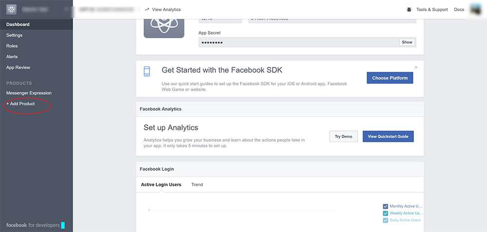
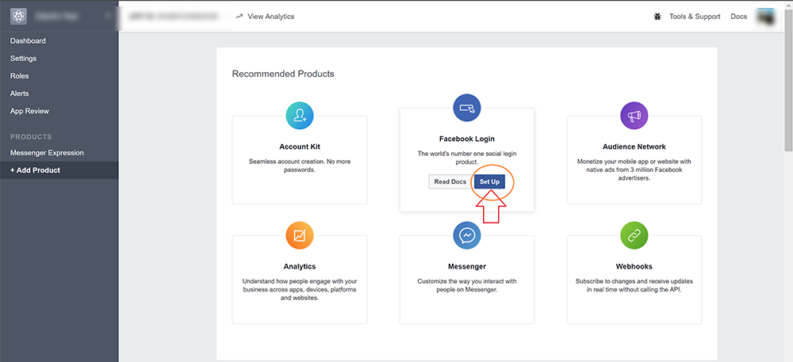
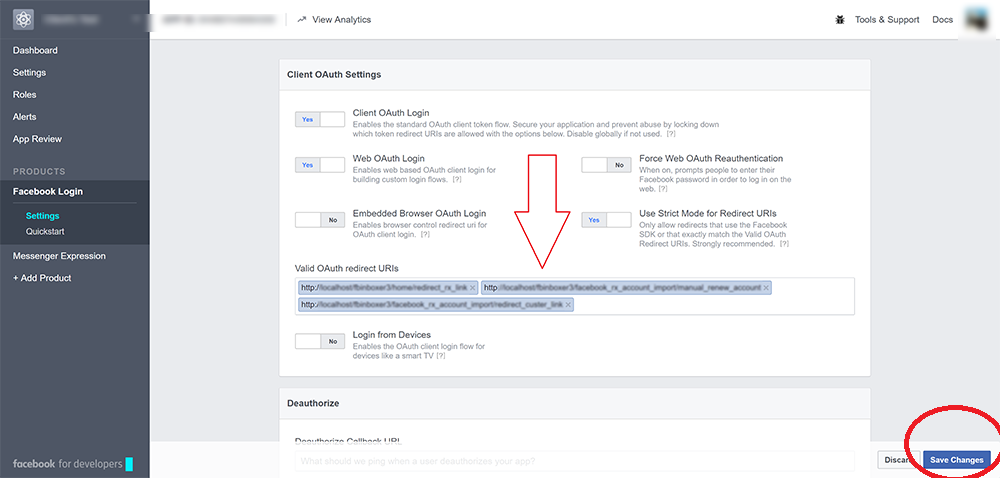
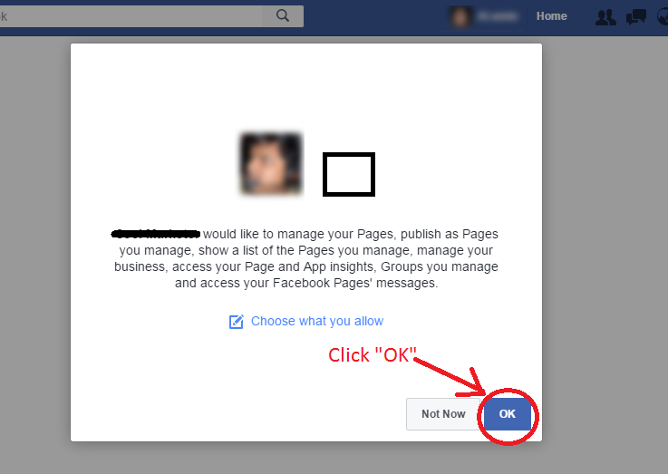
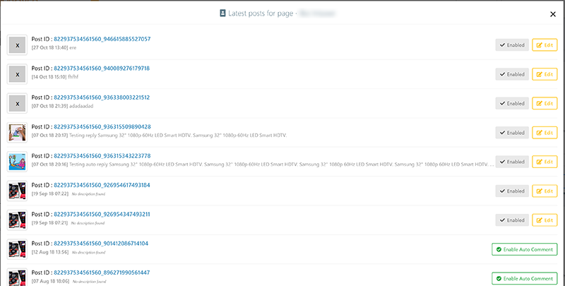
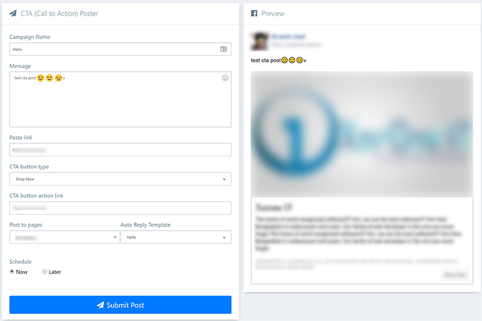
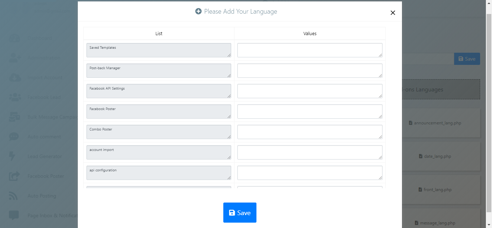

User Manual
- Created: 10th January 2017
- Latest update: 14th February 2019
- by: FB Inboxer
- http://xeroneit.net
- email: info@xeroneit.net
- Developed by : XerOne IT
How to Install?
- PHP v5.4 to 7 & mysql v5.x
- Make sure curl is enbaled , mbstring is enabled, set_time_out is enabled , safe_mode is off, open_base_dir has no value, allow_url_fopen=1 and mysqli support is on.
- Your domain must have https.
- Better performance : set php max_execution_time, mysql connect_timeout & mysql wait_timeout to long limit possible, so that your server can process script for long time if needed. This settings are optional but it is very helpful if you have a large number of users meaning have to handle huge data load.
[Note: If you get "404 page not found" error then make AllowOverride in your virual host and check if .htaccess file is uploaded successfully in root or not]
Installation Manual :- Download .zip package
- Upload it to your server
- Extract the package
- Make sure all files and folder have write permission after you extract because this software have auto update feature and system may need to change or replace any project file during auto update process. If you do not want to use auto update feature then make sure atleast application/install.txt, application/config (folder and child files), application/core (folder and child files), download, upload, upload_caster files have write permission.
-
Run the uploaded url via browser (http://yourdomain.com/projectFolder/) and you will find a interface to provide the settings :
- Hostname : database host name / IP (usually localhost)
- Database Name : create a mysql database on your host and write that name here
- Database username : username of the created database
- Database password : password of the created database
- Admin Panel Login Email: this will be used to login as admin
- Admin Panel Login Password : password to log in as admin
- Company Name and Company Address
- Company Phone / Mobile
- Click install button
- You are done. Log in with your admin username and password and start using.
- If installtion page appear again after you hit submit and processing done that means system could not delete application/install.txt and you have to delete that file manually.
Video Tutorial : How to install?
Administration
This panel is for only admin users. As an admin user, you will find everything to control your application here.
Settings > General Settings [Only Admin]
- Brand Settings:
This is the place where you can change company information, aplication details , contact etc
- Preference Settings: Choose default language,timezone,backend color skin here.There is a settings for focing https to make all urls https. There is also a settings for sending system email : you can choose either php mail system or can choose smtp email. If you choose smtp then you have to add email settings
- Logo & Favicon Settings: Set app logo and favicon. This logo & favicon will affect all over the project. Sometime it may need to clear browser cache to make the changes to affect.
- Auto Reply Settings: Delay used in auto reply is the time gap between two successive reply. You can also choose number of campaign to be processed by each cron and the how much old comment (max 200) system will fetch to enable auto reply. Auto reply live duration means after how much days system will stop sending replies and if you give renew access to users then users can renew the day settings after live duration expires.
-
Bulk Message Sending Setting: There are two config variables to overcome the issue of time out for bulk message sending.
The config variables "Number of Message Send per Cron Job" means the number of message will be send when a cron job runs. Suppose it is set to 10 and your campaign have 100 leads, so the campaign will be complete after 10 cron jobs run and it will avoid time out issue. Adjust the config as per your server performance. Here 0 means no limit.,
The another variable "Message Sending Report Update Frequency" means after how many message sending the campaign report will be updated. It is 10 by default. Setting it to lower value will increase the database load but very useful for time out issue as this updated information will be used in next cron job. System will start sending next time where it left the camapign earlier. If your server has timeout issue then you can reduce "Message Sending Report Update Frequency" to 5. But always keep the "Number of Message Send per Cron Job" higher than "Message Sending Report Update Frequency"
- Master Password & Facebook APP Access Settings: If you want your users to use their own Facebook app then Give access to user to set their own Facebook APP yes. As an admin you can also set a master password so that you can login to any users account using his/her email and this master password.
Use Approved Facebook App of Author : If you select Yes, you may skip to add your own app. You can use Author's pre-approved app. But this option only for the admin only. This can't be used for other system users. User management feature will be disapeared.
If you select No , you will need to add your own app & get approval and system users can use it.
Bulk Message Frequency & Auto Reply Cron Frequency Settings
Front-end Settings [Only Admin]
- This awesome software also now have an buli-in eye-catching landing page which is fully dynamic and can be controlled from this settings area.
- You can choose if you want landing page or not. If you select Display Landing Page as No then login page will be the default page.
- If you do not want social links to show up then keep the social links blank.
- If you choose Display Review Block as No then customer review section will be hidden from landing page. Put youtube watch url if you want to show a review video, keep it blank if you do not want it, it will be hidden then.
- If you choose Display Tutorial Block as No then tutorial section will be hidden from landing page. Put your tutorial title,thumbnail url & youtube watch url to affect the landing page.
Promo Section:
Review Section:
Tutorial Section:
Social Section:
Settings > Email Settings (System SMTP Email: Only Admin)
- This is the place to configure system email.
- You can add any SMTP email provider here. There are three stmp types : Default, TLS and SSL. Default option is for non-SSL smtp. You will find your smtp configuration in your cpanel.
- These settings will be used to send system emails like forget password, contact, send notification etc.
Analytics Settings [Only Admin]
- You may need to add analytics scripts like Google analytics or Facebook pixel code in landing page and login page to track visitors. Well we have sorted it out for you. Simply put the js scripts (with script tag) in the textarea and save and system will automatically embed them in landing page as well as login page. You can add multiple scripts in single textarea or can put other js in textarea rather than Google or Facebook scripts if you like.
Settings > Advertisement Settings
- The front end contains diffrent advertisement sections: 970x90 px ( large screen) / 320x100 px (small screen), 300x250 px (all screen), 300x250 px (all screen) and 300x600 px (large screen).
- You can change the advertise here. You can also choose weather you want to show advertise or not.
- If you choose to show advertise then write html code for each section, as for example you can add simply a html <img/> embedded inside a html <a/> tag or can add google adsense html code for each section.
Landing page adverisement section example:

Settings > Social Login Settings [Only Admin]
- Admin has to config "Social Login Settings" with Facebook APP ID, Facebook APP Secret, Google Client ID , Google Client Secret to make facebook & google login to work.
- HOW TO CREATE CREATE GOOGLE API?
- HOW TO CREATE CREATE FACEBOOK API?
Settings > Facebook API Settings
This is the form to add your facebook app information, you will get app domain, site url, valid oauth redirect uris needed to create facebook app here. Copy the urls and create your facebook app following the process below. You can create multiple app and can add but only one can be enabled at a time.Create your own facebook app and put APP ID and APP Secret here. System will take care of everything else.
How to create facebook app and get API ID & APP Secret?
Login to https://developers.facebook.com/ using your facebook account and click "Add a new app".
Click "Settings" menu. Here you will see your APP ID and APP Secret. Type YOUR APPLICATION DOMAIN in "App Domains".
Then click "Add Platform" and it will bring the following popup. Choose "Website" here.





Put valid oauth redirect URIs and click "Save Changes"

Click "App Review" menu and make your app public. Then just click the login button shown in below snapshot to activate your APP ID and APP Secret for this application.VIDEO TUTORIAL : HOW TO CREATE FACEBOOK APP?
FACEBOOK APP REVIEW
Most of the feature will work for you without APP Approval. Just Keep your APP in Development Mode.The function what work without any APP review:
1. Sync Leads
2. Bulk Message Campaign.
3. Auto Private Reply Without Name in response.
4. Send Message Button
5. Page Message Manager
1. Auto Comment Reply.
2. Facebook posting features
So, without going for APP Review you can still use the most important features. Even if you want to access some other users, you can activate the option give user their own APP.However to get all the feature working & use it by your other users as SaaS, You need to get APP Approval.
IT WORKS WITHOUT A FACEBOOK APP ALSO !
You can use the software without your own Facebook APP ID & Secret for your personal use1. Go to Administration -> Settings -> General Settings
2. Set to yes for Use Approved Facebook App of Author? And Save it.
3. Go to Administration -> Settings -> Facebook API Settings.
4. Click on Add Button, You will get a form like below image.

5. Go https://ac.getapptoken.com/ signup & then login.
6. After login there, click on Login with Facebook & you will get a code, copy it & paste it to Secret code & click on Save Button.
7. After that click on the F icon to import your account like the image below.
NOTE: When you select to use author app, your user management menu will be disabled/disappeared. However you can again turn off the Use Approved Facebook App of Author after importing your account & enable user management system.
Video Tutorial : How to use without any App
User Management [Only Admin]
- It is a muti-user application with the SaaS (Software as a Service) functionality.
- It consists of two types of user : admin level & user level (end user)
- Both will have similar features except only admin users will have access to "Administrative" menu.
- Admin will configure the system through general settings, email settings, api settings, payment settings etc while end users will use the system & will pay monthly service charge for using the system. It has feature to recieve payment via PayPal & Stripe will be discussed later in this documentation.
- In user management admin users will have access to add, view, disable, enable, edit, reset password, delete users.
- User Login Log option will show you the details of login made by different users recently.
- Note: if you add an user manually, then after addition edit the user to assign subscription package and expiry date manually.Deleting an user will delete all it's related data from everywhere of database.
User Add Form

User Edit Form [Package assign]
Extended license feature:-
User Activity Log: In this feature admin can check recent activities of users. Admin can go to user’s dashboard from this recent activity log by clicking on user’s name.
System Dashboard: Using system dashboard feature admin can see the full dashboard of whole system at a glance. With this result admin can acquire knowledge about how his clients are using the system.
User Dashboard: With extended license, admin has the facility to check every user’s dashboard individually. Using this feature admin can monitor every user’s activity.
Send Notification (email to users) [Only Admin]
- You can send email (festival greetings or maintenance notification) manually to any users.
- This system also has feature to send automatic alert to users who are going to be expired soon or notification to users who are expired recently. Automatic alert/notification procedure is described in Scheduler/Cron Job section.

Payment > Dashboard [Only Admin]
This is place where you can see your collection report graphically.
Payment > Payment Settings [Only Admin]
This is the place where you set your PayPal account / Stripe account or both and your currency. Your end users will pay to this PayPal account/ Stripe account.
Payment > Package Settings [Only Admin]
- You can create subscription plans or packages here. The system will automatically create a package named "Trial" with 7 days validity, so that, your users can try it and remeber that you can not delete this default package.
- Suppose you want to create a package named "basic" which validity will be 30days, price will be EUR 10 and you want to assign specific modules (i.e. email template, attention bar, website template) for this package. In this case you are lucky!! You can add unlimited packages you want including price,validity and modules. You can also put monthly analysis limit each module when you create a package. While you assign limits, 0 (zero) means unlimited.
- If you do not want a trial then edit deafult package's validity to 0 (zero).

- If you do not want to take money from users then edit the default package's price to "Free".
Payment > Payment History [Admin will have all and users will have own report]
History of all payment made by end users. You can search be name or payment date.
Annoucement Settings [Only Admin]
This is a easy way to communicate with your users. You can publish an annoucement and it will be displayed to users dashboard in the top right section beside the account switch dropdown. It will show the count of unread annoucement and clicking it will expand a box to read details of a specific annoucement as well as see list of all annoucements.
Import Account
- Clicking import account menu will bring you a button named "Login with Facebook", simply clicking it will start importing your facebook account.
-
Allow the permission as the snapshots below :
You can choose privary friends or public. It privacy is set to "Friends" the posts will be only visible to your friends. If you set it to "Public" then the posts will be visible to everyone. You should use "Public" for marketing purposes.
You must click "OK", otherwise nothing will work !!!

- Finally your account is imported now !!! You will see your pages. You can add another account (if your package is multi-account) same way. You can remove pages you do not need also can unlink your account.
- If you import multiple facebook accounts, you can switch among them from the top-right of the page.
Import Lead
- It is a very special feature that helps your marketting. You can send private inbox to all the users who sent message to your page. First you have to sync the contacts that were enganged in a conversation with your page by clicking "Scan Page Inbox" button. You can choose the number of lead you want to scan at a time from latest conversation, also you can scan for all leads. You can enable background scanning, this will sync your facebook leads daily automatically in background. (See Cron Job/Scheduler) . After scanning your all leads of that page, later during updating for new coming leads, it's better to use limit of latest conversation that will not scan all conversation but from latest limited number of conversation.
-
Scanning process scans your page conversation and import them as leads. We strongly recommend to use cron based scanning feature for first time, if your page conversation is huge. After importing all leads, the cron feature will not import any future new leads, you have to scan for latest leads manually occasionally using the scan limit feature. Although you can enable the cron based scanning again manually but be informed that it will rescan the full page conversation. If you are scanning for first time and your inbox conversation is moderate, then you can scan all of them at once. To get future new leads scan occasionally same as stated earlier.

- After you sync all the pages, you will be able to see lead list by clicking "Lead List" button. You can subscribe/unsubscribe an user for your campaigns.
Lead Group
Lead List
Edit lead:
Bulk group assign:
Multi-page Campaign
- Use this tool to send bulk message to lead lists of one or more pages.
- Message may contain texts, urls and emotions.You can include #LEAD_USER_NAME# variable by clicking 'Include Lead User Name' button. The variable will be replaced by real names when we will send it. If you want to show links or youtube video links with preview, then you can use 'Paste URL' OR 'Paste Youtube Video URL' fields below. Remember that if you put url/link inside this message area, preview of 'Paste URL' OR 'Paste Youtube Video ID' will not work. Then, the first url inside this message area will be previewed.
- After everything is set choose your pages and send/schedule your campaign
- You can see the message preview in the right side. You can also send test message to be sure how it will look in inbox.
- You can choose one or more you do not want to include the campaign. The leads you choose here will be unlisted form this campaign and will not recieve this message. Start typing a lead name, it's auto-complete.
- Message support spintax, example : {Hello|Howdy|Hola} to you, {Mr.|Mrs.|Ms.} {{Jason|Malina|Sara}|Williams|Davis}
- Message also may contain emojis, simple clicking the smile icon will open the emoji library.
Multi-group Campaign
Custom Campaign
- Use this tool to send bulk message to selected leads of all your pages.
- First select leads you want to send message then click "Create New Campaign" button.
- Message may contain texts, urls and emotions.You can include #LEAD_USER_NAME# variable by clicking 'Include Lead User Name' button. The variable will be replaced by real names when we will send it. If you want to show links or youtube video links with preview, then you can use 'Paste URL' OR 'Paste Youtube Video URL' fields below. Remember that if you put url/link inside this message area, preview of 'Paste URL' OR 'Paste Youtube Video ID' will not work. Then, the first url inside this message area will be previewed.
- Message support spintax, example : {Hello|Howdy|Hola} to you, {Mr.|Mrs.|Ms.} {{Jason|Malina|Sara}|Williams|Davis}
- Message also may contain emojis, simple clicking the smile icon will open the emoji library.
- After everything is set choose your pages and send/schedule your campaign
- You can see the message preview in the right side. You can also send test message to be sure how it will look in inbox.
- You can choose one or more you do not want to include the campaign. The leads you choose here will be unlisted form this campaign and will not recieve this message. Start typing a lead name, it's auto-complete.
Campaign Report
- See reports of all pending,processing and completed campaigns.
There are three controlling options : pause , play and force-process. Pausing campaign will stop sending sending message and playing again will restart sending again. If you think campaign has been stoped for some system failure like timeout then you can force-process the campaign to resume it again.
- Click the "Report" button to see delivery status of your message. Report will display status of message delivery for each lead.
- Suppose you are sending message to 500 people and 10 or 20 of them have blocked your page to receive message from them. In this situation system will stop sending message as soon as it gets 10 errors response during sending message to protect you from any kind of unwanted blocking by Facebook. If the campaign has been completed without sending to all and you think you can proceed the campaign & there is less possibilty to get error response, you will see a button Resend from where it is left off to resume sending where it is left off before completion of campaign.
Auto Comment Tools
Let's first discuss the difference between auto reply and auto comment, may be you have mixed them together. Well, auto reply tools reply automatically whenever someone comment on any of your reply enabled post of a page. The reply can be a comment or a private message. On the other hand, auto comment tools have the ability to comment onetime or periodically on post as page automatically to keep the commenters engaged with the post.
Enable Auto Comment
- The first job is to enable auto comment for your posts. To do so, click "Get Latest Post & Enable Auto Comment" button aginst a perticular page. It will show you latest post of that page and you can enable auto comment then. You can also enable auto comment for a specific post by clicking "Enable by post id" button & putting the post id.

-
Now click "Enable Auto Comment" for enabling any particular post.
Choose pre-defined auto comment template, choose schedule type : one time or periodic.Onetime campaign will comment only the first comment of the selected template and periodic campaign will auto comment multiple time periodically as per your settings. If you choose one time then just select the time & time zone to comment. Periodic have some other settings like how frequntly you want to comment, campaign start & end time, comment in between time. Also you can choose random/serial comment. Random type will pick a comment from template randomly each time and serial type will pick the comment serially from selected template first to last.
Auto Comment Template
- A auto comment template can contain multiple comments. Simply create a template by adding the comments you want for that template. Later this templates will be displayed when you create a new auto comment campaign.
- Comment also may contain emojis, simple clicking the smile icon will open the emoji library.
Auto Commnet Report
- You can see page-wise comment by clicking "View Report" button. There are also some other advance features to control reply like pause/play campaign and force-processing. If you pause a campaign then it will stop commenting temporarily and playing will restart it again. Force Reprocessing means you are going to process this campaign again from where it ended. You should do only if you think the campaign is hung for long time and didn't comment for long time. It may happen for any server timeout issue or server going down during last attempt or any other server issue.
Lead Generator Tools
We have been discussing about account import, lead import and creating campaign. This app has something more powerful. It's the lead generator. Yes, you get it right. This tool will build huge lead list for your pages
Enable Auto Reply
- The first job is to enable auto private reply/comment reply for your posts. To do so, click "Get Latest Post & Enable Auto Reply" button aginst a perticular page. It will show you latest post of that page and you can enable auto reply then. You can also enable private reply/comment reply by clicking "Enable reply by post id" button & putting post id.
-
Now click "Enable Auto Reply" for enabling any particular post. You can send generic message or can send filtering based message. You can add upto 10 filering options.
Each filtering option contains a comma seperated word/sentence field and message field. Anyone who will comment on this post will get the message in his inbox (for private reply) and get the comment (for comment reply). You can choose whether you want private reply/comment reply or both.

- Reply also may contain emojis, simple clicking the smile icon will open the emoji library.
Auto Reply Report
- You can see page-wise comment & reponse report by clicking "View Report" button. There are also some other advance features to control reply like pause/play campaign, renew expired campaign and force-processing. If you pause a campaign then it will stop giving reply temporarily and playing will restart it again. There is a settings name auto reply live duration in general settings means how many days the campaign will work, if the time expires you can renew it by clicking the renew button here in this report grid. Force Reprocessing means you are going to process this campaign again from where it ended. You should do only if you think the campaign is hung for long time and didn't reply for long time. It may happen for any server timeout issue or server going down during last attempt or any other server issue.
Send Message Button
- Generate "Message Us" button of your facebook page and embed one line of html code to display the button to your website. Clicking this button will take your website visitors to your facebook page. When they send you a message they will be in your lead list. You can customize your button by uploading a custom image.
Messenger Ad JSON Script
- Facebook marketers often spend on facebook advertise. Ad also support private inbox action. It requires an JSON script to do so. This tools will generate the JSON script needed for advertise action. Anyone who click on the ad will recieve the message in his/her inbox. You can embed image, links, message etc. You can see the live preview in the right side.
Facebook Poster
Text/Image/Link/Video Post
-
Text Post: Enter post description & choose pages to post.Live preview is availabe.Choose the pages where you want to post. You can enable auto private and comment reply, by simply choosing Auto Reply Template.You can schedule the campaign now or later. If you choose to schedule later then you have to enter time and timezone.
Link Post: Paste your link, type a description(Optional).Live preview is availabe.You can enable auto private and comment reply, by simply choosing Auto Reply Template.You can schedule the campaign now or later. If you choose to schedule later then you have to enter time and timezone.
Image/Multi-image Post: Upload one/more images , type a description(optional).Live preview is availabe.Choose the pages where you want to post. You can enable auto private and comment reply, by simply choosing Auto Reply Template.You can schedule the campaign now or later. If you choose to schedule later then you have to enter time and timezone.
Video Post:Upload a video, type a description(optional).Live preview is availabe.Choose the pages where you want to post. You can enable auto private and comment reply, by simply choosing Auto Reply Template.You can schedule the campaign now or later. If you choose to schedule later then you have to enter time and timezone.
- Post may contain emojis, simple clicking the smile icon will open the emoji library.
CTA Post
Type a message and paste an link like (http://xyz.net). System will grab the link details like preview image,title,description automatically and show you how it will look on Facebook after publish. Choose "Message Page" CTA button to generate more leads,anyone who will send message clicking the button will be in your lead list. You can also use other available CTA buttons if you like. You can choose where to post among your pages. CTA post can only be posted in pages. You can enable auto private and comment reply, by simply choosing Auto Reply Template. You can schedule the campaign now or later. If you choose to schedule later then you have to enter time and timezone.
Carousel/Slider Post
-
Carousel Post: Put a optional description and slider action link. Upload two or more carousel section. Each section consists title,link,description and image. Choose the pages where you want to post. You can enable auto private and comment reply, by simply choosing Auto Reply Template.You can schedule the campaign now or later. If you choose to schedule later then you have to enter time and timezone.
Video Slider Post: Upload 2 or more images and it will be posted as a video slider. You can choose image play duration and transition duration. Choose the pages where you want to post. You can enable auto private and comment reply, by simply choosing Auto Reply Template.You can schedule the campaign now or later. If you choose to schedule later then you have to enter time and timezone.
- Post may contain emojis, simple clicking the smile icon will open the emoji library.
Template Manager
- You can create auto reply template for Facebook posting tools so that you do not need to enable auto reply from lead generator tools for your post created inside this software. This template form is very much similar with the auto reply enable form in lead generator.
- Template may contain emojis, simple clicking the smile icon will open the emoji library.
Page Inbox & Notification
- Do you have many pages for your business promotion? Then you must have to see page inbox messages frequently. This tool will help you to see all pages' unread messages as well as last few conversation of pages all in one dashboard !!! You can reply even see conversation and reply message. You will also get email notifications for unread page messages.
- At first you have to enable pages to use this feature and have to config email alert details.
- Message Dashboard
- Conversation & reply
Cron Job/Scheduler [Only Admin]
To get your API KEY and Cron Job command go to Cron Job menu inside the software.
Copy the commands and configure it into your server.
Video tutorial : How to setup cron job in CPanel
Multilingual Support
Language Dashboard Contains of Application, Plugins and add-ons Languages Informations. You can see how many languages are in Application, Plugins and in Add-ons.
There are several restrictions on Add A New Language. These are belows:
- Only Alphaneumeric and Underscores are allowed.
- You can't add exiting language name.
- You can't add files before adding name first.
If you want to add a new language then follow the below steps to add a new Language:
-
Click on the Add A New Language button to begin the add language process.
-
Give a name and save it. It will save the language with language files into application/language/language_name, plugins/grocery_crud/language_name.php and into all of your addons language folder.
- After adding the language name, now you can add the language texts from files. First add application languages by Click on files box to add your language texts against system text, followed by plugins and add-on language texts (You must have to add plugins and add-on language texts from the files otherwise languages from plugins and add-ons will show empty when you select your new language.)
-
By click on the file box you'll find a modal of language texts. Scroll on the form to fill up the full form. After completing the form click on save button to save your language texts of the file (if you remain a field empty,then it'll fill up with the left sided value).
 - After saving the file, close the modal. You'll able to see which files are added by the checkmark sign.
-
After adding all language files. Go to Language Dashboard to see your added language.
There are several restrictions on update an existing Language. These are belows:
- Only Alphaneumeric and Underscores are allowed.
- You can't update language name as existing name.
To Update an existing language name and it's contents, follow the below steps :
-
Click on the edit button of language which you want to edit.
-
If you want to update the language name, then give your updated language name and click on update button.
-
If you want to update files language texts, then click on file box to get the texts modal.
-
From update modal, you can edit your texts. Scroll on form to see the full form and click on update button to update the file (if you remain a field empty,then it'll fill up with the left sided value).
-
Close the modal and see which file gets updated by checkmark sign.
You can also update plugins/add-ons languages following the above steps.
You can download the language folder as backup. Just click on the download button to download the language.
There are several restrictions on delete an Language. These are belows:
- You can't delete the English language.
- You can't delete the selcted language.
Click on the delete button to see your all existing languages.
Click on the language to delete (It will delete the language fully from application,plugins,add-ons language folder).
How to Update Manually?
Manual update has been turned off since v6.1.1, only auto update is available now on for core software and all of it's addons. To auto update simply login to admin panel and go to Check Update menu.
1. Download v6.1.1
2. Copy/Replace your following files and folders taking from v6.1.1
- application/controllers/Autoposting.php
- application/controllers/Facebook_ex_auto_comment.php
- application/controllers/Facebook_ex_autoreply.php
- application/controllers/Facebook_ex_import_lead.php
- application/controllers/Facebook_rx_account_import.php
- application/controllers/Facebook_rx_config.php
- application/controllers/Home.php
- application/controllers/Native_api.php
- application/controllers/Update_system.php
- application/helpers/my_helper.php
- application/language/*/addon_menu_lang.php
- application/language/*/autoposting_lang.php
- application/language/english/admin_user_a_lang.php
- application/language/english/front_lang.php
- application/language/spanish/message_lang.php
- application/libraries/Fb_rx_login.php
- application/libraries/Rss_feed.php
- application/modules/ultrapost/controllers/Ultrapost.php
- application/modules/ultrapost/views/carousel_slider_post/slider_post_list.php
- application/modules/ultrapost/views/carousel_slider_post/video_slider_poster.php
- application/modules/ultrapost/views/cta_post/add_cta_post.php
- application/modules/ultrapost/views/cta_post/cta_post_list.php
- application/modules/ultrapost/views/text_image_link_video_post/add_auto_post.php
- application/modules/ultrapost/views/text_image_link_video_post/auto_post_list.php
- application/views/admin/payment/add_package.php
- application/views/admin/payment/details_package.php
- application/views/admin/payment/update_package.php
- application/views/admin/update_system/index.php
- application/views/api/native_api.php
- application/views/autoposting
- application/views/facebook_ex/import_lead.php
- application/views/facebook_ex/auto_reply/all_auto_reply_report.php
- application/views/facebook_ex/auto_reply/auto_reply_report.php
- application/views/facebook_ex/campaign/add_custom_campaign.php
- application/views/facebook_ex/campaign/add_multigroup_campaign.php
- application/views/facebook_ex/campaign/add_multipage_campaign.php
- application/views/admin/theme/theme.php
- application/views/admin/theme/notification.php
- application/views/admin/theme/sidebar.php
- application/views/member/usage_log.php
- application/views/include/js_include_back.php
- application/views/include/theme_css.php
- application/language/spanish/message_lang.php
- assets/login_new/css/style.css
- css/custom_new.css
- system/libraries/Email.php
- system/libraries/Form_validation.php
3. Run the database migration file via browser. Example link http://example.com/update
4. You are done.
Manual update has been turned off since v5.0, only auto update is available now on for core software and all of it's addons. To auto update simply login to admin panel and go to Check Update menu.
1. Download v5.0
2. Copy/Replace your following files and folders taking from v5.0
- application/controllers/Addons.php
- application/controllers/Facebook_rx_account_import.php
- application/controllers/Update.php
- application/controllers/Update_system.php
- application/views/admin/theme/notification.php
- application/libraries/Fb_rx_login.php
- application/modules/ultrapost
- upload_caster/carousel_slider
- upload_caster/offer_post
- upload_caster/text_image_link_video
- assets/images/demo_image.png
- assets/images/slider1.png
- assets/images/slider2.png
- assets/images/slider3.png
- documentation/index.html
3. Run the database migration file via browser. Example link http://example.com/update
4. You are done.
1. Download v4.8
2. Copy/Replace your following files and folders taking from v4.8
- application/controllers/Admin_config.php
- application/controllers/Admin_config_email.php
- application/controllers/Announcement.php
- application/controllers/Facebook_ex_autoreply.php
- application/controllers/Home.php
- application/controllers/Update.php
- application/language/YOUR_LANGUAGE_FOLDER/announcement_lang.php
- application/libraries/Grocery_CRUD.php
- application/views/admin/config/edit_config.php
- application/views/admin/theme/notification.php
- application/views/admin/update_system/index.php
- application/views/announcement
- application/views/facebook_ex/auto_reply/all_auto_reply_report.php
- application/views/facebook_ex/auto_reply/auto_reply_report.php
3. Run the database migration file via browser. Example link http://example.com/update
4. You are done.
1. Download v4.7.6
2. Copy/Replace your following files and folders taking from v4.7.6
- assets/images/preview/*
- application/controllers/Admin_config.php
- application/controllers/Facebook_ex_campaign.php
- application/controllers/Facebook_ex_import_lead.php
- application/controllers/Facebook_ex_autoreply.php
- application/controllers/Native_api.php
- application/controllers/Home.php
- application/libraries/Fb_rx_login.php
- application/views/admin/config/edit_config.php
- application/views/admin/theme/sidebar.php
- application/views/facebook_ex/campaign/campaign_list.php
- application/views/facebook_ex/auto_reply/all_auto_reply_report.php
- application/views/facebook_ex/auto_reply/auto_reply_report.php
3. Open application/config/my_config.php and update 'product_version' to 4.7.6
4. You are done.
1. Download v4.7.3
2. Copy/Replace your following files and folders taking from v4.7.3
- plugins/select_search
- application/controllers/Admin_config.php
- application/controllers/Home.php
- application/controllers/Payment.php
- application/libraries/Paypal_class.php
- application/views/admin/config/edit_config.php
- application/views/admin/theme/sidebar.php
3. Open application/config/my_config.php and update 'product_version' to 4.7.3
4. You are done.
1. Download v4.7.1
2. Copy/Replace your following files and folders taking from v4.7.1
- css/bot_template.css
- plugins/datepicker/datepicker3.css
- application/controllers/Home.php
- application/controllers/Update.php
- application/controllers/Update_system.php
- application/views/admin/theme/theme.php
- application/views/page/account_activation.php
3. Run the database migration file via browser. Example link http://example.com/update/v4_7to4_7_1
4. You are done.
1. Download v4.7
2. Copy/Replace your following files and folders taking from v4.7
- css/custom.css
- application/controllers/Addons.php
- application/controllers/Admin.php
- application/controllers/Admin_config.php
- application/controllers/Home.php
- application/controllers/Update.php
- application/views/admin/config/edit_config.php
- application/views/admin/theme/theme.php
- application/views/admin/theme/sidebar.php
- application/views/admin/theme/notification.php
- application/views/admin/theme/message.php
- application/views/facebook_ex/update_contact.php
- application/views/front/gdpr.php
- application/views/front/privacy_policy.php
- application/views/front/terms_use.php
- application/views/member/edit_profile.php
- application/views/site/site_theme.php
- application/language/YOUR_LANG_FOLDER/v_4_8_lang.php
3. Run the database migration file via browser. Example link http://example.com/update/v4_6_1to4_7
4. You are done.
1. Download v4.6.1
2. Copy/Replace your following files and folders taking from v4.6.1
- application/controllers/Admin.php
- application/controllers/Facebook_rx_account_import.php
- application/controllers/Home.php
- application/controllers/Update.php
- application/views/facebook_ex/dashboard.php
- application/views/include/theme_css.php
3. Run the database migration file via browser. Example link http://example.com/update/v_4_6to4_6_1
4. You are done.
1. Download v4.6
2. Copy/Replace your following files and folders taking from v4.6 [You can delete and upload application/controllers and application/views folders to save time]
- assets/images/avatar.png
- assets/images/login_with_facebook.png
- css/AdminLTE.css
- css/custom.css
- css/skins/skin-black.css
- css/skins/skin-black-light.css
- css/skins/skin-red.css
- sign_up_page_layout/css/custom.css
- plugins/grocery_crud/themes/flexigrid/css/flexigrid.css
- plugins/grocery_crud/themes/flexigrid/views/add.php
- plugins/grocery_crud/themes/flexigrid/views/edit.php
- application/controllers/Facebook_rx_account_import.php
- application/controllers/Facebook_rx_cta_poster.php
- application/controllers/Fb_msg_manager.php
- application/controllers/Home.php
- application/controllers/Member.php
- application/controllers/Native_api.php
- application/libraries/Fb_rx_login.php
- application/libraries/Stripe_class.php
- application/views/add_ons/list.php
- application/views/facebook_rx/admin_login.php
- application/views/admin/config/analytics_config.php
- application/views/admin/config/edit_ad_config.php
- application/views/admin/config/edit_config.php
- application/views/admin/config/edit_purchase_code_config.php
- application/views/admin/theme/notification.php
- application/views/admin/theme/sidebar.php
- application/views/admin/theme/theme.php
- application/views/admin/update_system/index.php
- application/views/admin/user/change_user_password.php
- application/views/api/native_api.php
- application/views/facebook_ex/dashboard.php
- application/views/facebook_ex/auto_reply/all_auto_reply_report.php
- application/views/facebook_ex/auto_reply/auto_reply_report.php
- application/views/facebook_rx/account_import.php
- application/views/fb_messenger_manager/page_list_grid.php
- application/views/front/theme_front.php
- application/views/include/theme_css.php
- application/views/member/edit_profile.php
- application/views/page/login.php
- application/views/page/sign_up.php
- documentation/index.html
3. Run the database migration file via browser. Example link http://example.com/update/v_4_4_1to4_6
4. You are done.
Only for auto update
Only for auto update
1. Download v4.4
2. Copy/Replace your following files and folders taking from v4.4
- application/controllers/Fb_chat_plugin_custom.php
- application/controllers/Fb_msg_manager.php
- application/controllers/Fb_msg_manager_notification.php
- application/controllers/Facebook_rx_insight.php
- application/controllers/Update.php
- application/controllers/Update_system.php
- application/language/russian/v_4_3_lang.php
- application/views/admin/update_system/index.php
- documentation/index.html
3. Run the database migration file via browser. Example link http://example.com/update/v_4_3to4_3
4. You are done.
1. Download v4.3
2. Copy/Replace your following files and folders taking from v4.3
- application/controllers/Facebook_rx_account_import.php
- application/controllers/Facebook_rx_insight.php
- application/controllers/Fb_chat_plugin_custom.php
- application/controllers/Home.php
- application/controllers/Payment.php
- application/controllers/Update.php
- application/controllers/Update_system.php
- application/language/YOUR_LANGUAGE_FOLDER/v_4_3_lang.php
- application/views/admin/payment/add_package.php
- application/views/admin/payment/details_package.php
- application/views/admin/payment/update_package.php
- application/views/admin/theme/notification.php
- application/views/admin/theme/sidebar.php
- application/views/admin/theme/theme.php
- application/views/facebook_rx/insight/page_statistics.php
- application/views/member/usage_log.php
- documentation/index.html
3. Run the database migration file via browser. Example link http://example.com/update/v_4_2_2to4_3
4. You are done.
1. Download v4.2.2
2. Copy/Replace your following files and folders taking from v4.2.2
- application/controllers/Addons.php
- application/controllers/Facebook_ex_autoreply.php
- application/controllers/Facebook_ex_json_messanger.php
- application/controllers/Facebook_rx_cta_poster.php
- application/controllers/Update.php
- application/views/facebook_ex/campaign/add_custom_campaign.php
- application/views/facebook_ex/campaign/add_multigroup_campaign.php
- application/views/facebook_ex/campaign/add_multipage_campaign.php
- application/views/facebook_ex/campaign/edit_custom_campaign.php
- application/views/facebook_ex/campaign/edit_multigroup_campaign.php
- application/views/facebook_ex/campaign/edit_multipage_campaign.php
- documentation/index.html
3. Run the database migration file via browser. Example link http://example.com/update/v_4_2_1to4_2_2
4. You are done.
1. Download v4.2.1
2. Copy/Replace your following files and folders taking from v4.2.1
- application/controllers/Home.php
- application/controllers/Native_api.php
- application/controllers/Update.php
- application/controllers/Update_system.php
- application/views/add_ons/list.php
- application/views/admin/theme/notification.php
- application/views/admin/theme/sidebar.php
- application/views/admin/theme/theme.php
- application/views/facebook_ex/message_button/generate_message_button.php
- assets/images/preview
- documentation/index.html
3. Run the database migration file via browser. Example link http://example.com/update/v_4_2to4_2_1
4. You are done.
1. Download v4.2
2. Copy/Replace your following files and folders taking from v4.2
- application/controllers/Home.php
- application/controllers/Update.php
- application/libraries/fb_rx_login.php
- application/views/admin/payment/*
- application/views/admin/theme/theme.php
- application/views/front/privacy_policy.php
- application/views/front/terms_use.php
- application/views/member/usage_log.php
- application/views/site/site_theme.php
- documentation/index.html
- system/libraries/form_validation.php
3. Run the database migration file via browser. Example link http://example.com/update/v_4_1to4_2
4. You are done.
1. Download v4.1
2. Copy/Replace your following files and folders taking from v4.1
- application/config/autoload.php
- application/controllers/Admin_config.php
- application/controllers/Facecbook_ex_autoreply.php
- application/controllers/Facecbook_ex_campaign.php
- application/controllers/Facebook_rx_account_import.php
- application/controllers/Facebook_rx_config.php
- application/controllers/Home.php
- application/controllers/Native_api.php
- application/controllers/Update.php
- application/controllers/Update_system.php
- application/helpers/addon_helper.php
- application/helpers/my_helper.php
- application/language/YOUR_LANGUAGE_FOLDER/v4.1_lang.php
- application/libraries/fb_rx_login.php
- application/views/admin/config/edit_config.php
- application/views/admin/theme/sidebar.php
- application/views/admin/theme/theme.php
- application/views/admin/update_system/index.php
- application/views/add_ons/lists.php
- application/views/facebook_rx/admin_login.php
- application/views/facebook_rx/user_login.php
- application/views/facebook_ex/auto_reply/*
- application/views/facebook_ex/campaign/*
- assets/images/csscheckbox.png
- css/custom.css
- documentation/index.html
- plugins/datatables/jquery.dataTables.css
- upload/commenttagmachine
3. Run the database migration file via browser. Example link http://example.com/update/v4_0_1to4_1
4. You are done.
1. Download v4.0.1
2. Copy/Replace your following files and folders taking from v4.0.1
- application/config/config.php
- application/config/mimes.php
- application/controllers/Facebook_ex_campaign.php
- application/controllers/update.php
- application/views/facebook_ex/auto_reply/auto_reply_page_list.php
- application/views/facebook_ex/auto_reply/auto_reply_report.php
- application/views/admin/update_system/index.php
- application/helpers/addon_helper.php
- documentation/index.html
- js/my_chat_custom.js
3. Open application/config/my_config.php and update 'product_version' to 4.0.1
4. Run the database migration file via browser. Example link http://example.com/update/v_4_0to4_0_1
5. You are done.
If you want to use auto update, go to check update menu from your FBInboxer admin panel and click the update button. Then change product version as mentioned in step 3 and run database migration file as mentioned in step 4
1. Download v4.0
2. Create/Copy/Replace your following files and folders taking from v4.0 [* MEANS ALL]
- assets/images/dashboard
- application/controllers/* [we are recommendeding to delete old folder and upload new]
- application/config/config.php
- application/core/MY_input.php
- application/core/MY_Loader.php
- application/core/MY_Router.php
- application/helpers/* [we are recommendeding to delete old folder and upload new]
- application/language/* [we are recommendeding to delete old folder and upload new]
- application/libraries/* [we are recommendeding to delete old folder and upload new]
- application/models/* [we are recommendeding to delete old folder and upload new]
- application/modules [create directory]
- application/third_party/*
- application/views/add_ons/*
- application/views/admin/theme/*
- application/views/admin/update_system/*
- application/views/admin/config/edit_config.php
- application/views/admin/config/edit_purchase_code_config.php
- application/views/api/native_api.php
- application/views/errors/*
- application/views/facebook_ex/*
- application/views/fb_messenger_manager/*
- application/views/facebook_rx/account_import.php
- application/views/include/css_include_back.php
- css/* [we are recommendeding to delete old folder and upload new]
- documentation/*
- index.php
- upload/addon [create update]
- plugins/grocery_crud/*
- system/*
3. Open application/config/my_config.php and make $config['sess_use_database'] = FALSE;
4. Run the database migration file via browser. Example link http://example.com/update/v_3_2tov4_0
5. Now make sure all files and folder have write permission (755 permission recommended)
1. Download v3.2
2. Copy/Replace your following files and folders taking from v3.2
- application/controllers/facebook_ex_campaign.php
- application/controllers/facebook_rx_account_import.php
- application/controllers/facebook_rx_config.php
- application/controllers/home.php
- application/controllers/native_api.php
- application/libraries/fb_login.php
- application/libraries/fb_rx_login.php
- application/views/admin/theme/theme.php
- application/views/facebook_ex/import_lead.php
- application/views/facebook_ex/campaign/campaign_list.php
- documentation/*
3. Open application/config/my_config.php and update 'product_version' to v3.2
4. If you are using latest Facebook app (after v2.9) and getting errors while login with facebook then you need to change your facebook app setings a bit. You have to put redirect url inside facebook app as facebook's new policy. You will get the urls needed inside the app, just follow this.Then watch this video to know how to put the urls in your facebook
5. You are done.
1. Download v3.1
2. Copy/Replace your following files and folders taking from v3.1 [* means all files & folder]
- application/controllers/admin_config.php
- application/controllers/facebook_ex_campaign.php
- application/controllers/facebook_ex_import_lead.php
- application/controllers/facebook_rx_account_import.php
- application/controllers/fb_msg_manager.php
- application/controllers/home.php
- application/controllers/native_api.php
- application/controllers/update.php
- application/language/english/admin_lang.php
- application/language/english/admin_user_a_lang.php
- application/language/french/admin_user_a_lang.php
- application/language/EACH_LANGUAGE_FOLDER/misc3_lang.php
- application/libraries/fb_rx_login.php
- application/views/admin/config/edit_config.chp
- application/views/api/native_api.php
- application/views/facebook_ex/import_lead.php
- application/views/facebook_ex/campaign/edit_custom_campaign.php
- application/views/facebook_ex/campaign/edit_multigroup_campaign.php
- application/views/facebook_ex/campaign/edit_multipage_campaign.php
- application/views/fb_messenger_manager/page_list_grid.php/li>
- documentation/*
3. Run the database migration file via browser. Example link http://example.com/update/v_3_0to3_1
4. Open application/config/my_config.php and update 'product_version' to v3.1
5. Go to cron job menu and set up the new cron job command written there to your server "Delete Junk Data Cron Job Command" and we recommend now to change frequency of one of previous cron job " Send Inbox Message Cron Job Command" to every minute.
6. If your server has time out issue while sending message , then adjust the variables mentioned in General Settings block of this manual.
7. You are done, it's 3.1 now but your previous campaigns will cause problem for new campaigns.
You must run the follwoing sql to your database (via phpmyadmin):
UPDATE `facebook_ex_conversation_campaign` SET `is_try_again`='0' WHERE `posting_status`='2';
UPDATE `facebook_ex_conversation_campaign` SET `is_try_again`='0',`error_message`='This campaign is depreciated in v3.1',`posting_status`='2' WHERE `posting_status`!='2';
1. Download v3.0
2. Copy/Replace your following files and folders taking from v3.0 [* means all files & folder]
- documentation/*
- application/controllers/*
- application/libraries/fb_rx_login.php
- application/views/*
- application/language/*
3. Open application/config/my_config.php and update 'product_version' to v3.0
4. You are done.
1. Download v2.4
2. Copy/Replace your following files and folders taking from v2.4
- documentation/*
- application/controllers/admin_config.php
- application/controllers/facebook_ex_autoreply.php
- application/controllers/facebook_ex_dashboard.php
- application/controllers/facebook_rx_config.php
- application/controllers/native_api.php
- application/libraries/fb_rx_login.php
- application/views/admin/config/analytics_config.php
- application/views/admin/config/edit_config.php
- application/views/admin/theme/sidebar.php
- application/views/facebook_ex/dashboard.php
- application/views/include/fb_px.php
- application/views/include/google_code.php
- application/views/page/login.php
- application/views/site/site_theme.php
3. Open application/config/my_config.php and update 'product_version' to v2.4
4. You are done.
1. First stop "Send auto private reply on comment Cron job command" from your server.
2. Download v2.3
3. Copy/Replace your following files and folders taking from v2.3
- documentation/*
- application/controllers/facebook_ex_autoreply.php
- application/controllers/facebook_ex_import_lead.php
- application/controllers/facebook_rx_account_import.php
- application/controllers/native_api.php
- application/controllers/update.php
- application/libraries/fb_rx_login.php
- application/views/facebook_ex/auto_reply/all_auto_reply_report.php
- application/views/facebook_ex/auto_reply/auto_reply_report.php
- application/views/facebook_ex/contact_list.php
- application/views/facebook_rx/account_import.php
- application/views/facebook_rx/cta_post/add_cta_post.php
4. Open application/config/my_config.php and update 'product_version' to v2.3
5. Run the migration file via browser. Example link http://example.com/update/v_2_2to2_3
6. Now start "Send auto private reply on comment Cron job command" from your server.
7. You are done.
1. Download v2.2
2. Copy/Replace your following files and folders taking from v2.2
- application/controllers/*
- application/libraries/*
- application/views/facebook_ex/auto_reply/*
- application/views/facebook_rx/account_import.php
- documentation/*
3. Open application/config/my_config.php and update 'product_version' to v2.2
4. You are done.
1. Download v2.0
2. Copy/Replace your following files and folders taking from v2.1
- documentation/*
- application/controllers/*
- application/views/facebook_ex/*
3. Open application/config/my_config.php and update 'product_version' to v2.1
4. You are done.
1. Download v2.0
2. Copy/Replace your following files and folders taking from v2.0
- documentation/*
- js/*
- application/controllers/*
- application/models/*
- application/libraries/*
- application/views/admin/theme/sidebar.php
- application/views/admin/config/edit_config.php
- application/views/admin/payment/*
- application/views/facebook_chat_custom/fb_chat.php
- application/views/facebook_ex/*
- application/views/facebook_rx/cta_post/cta_post_list.php
- application/views/include/*
- application/views/page/*
- application/views/site/site_theme.php
3. Open application/config/my_config.php and update 'product_version' to v2.0
4. Run the migration file via browser. Example link http://examplr.com/update/v_1_1to2_0
5. You are done.
1. Download v1.1
2. Copy/Replace your following files and folders taking from v1.1
- application/controllers/*
- application/libraries/*
- application/views/*
- documentation/*
3. Open application/config/my_config.php and update 'product_version' to v1.1
4. You are done.
Sources & Credits
Thanks a lot to